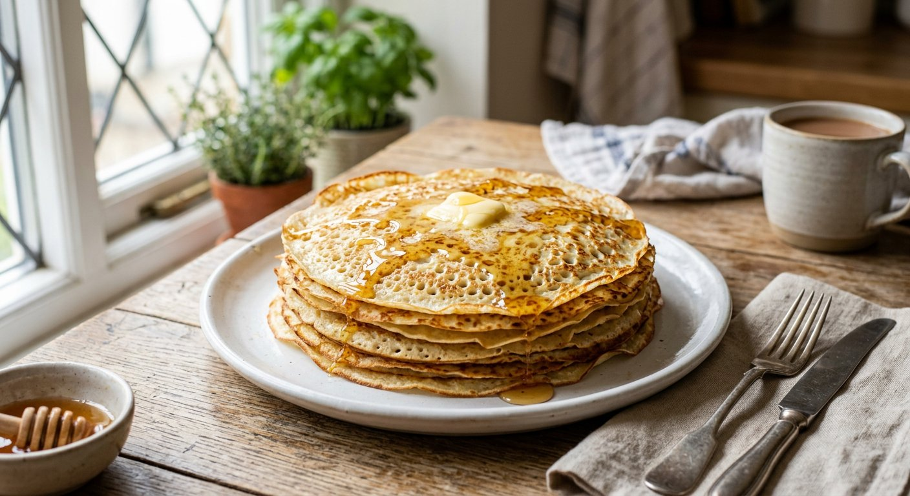
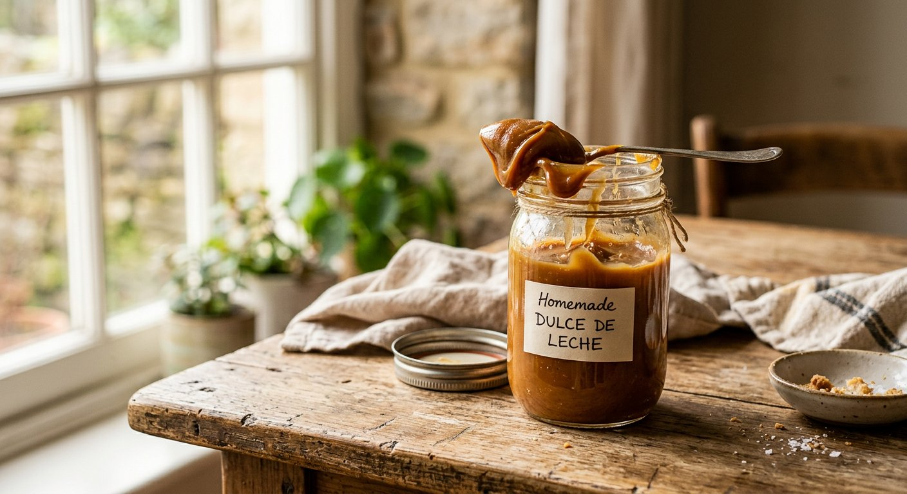

Нежные, мягкие блинчики, которые не рвутся. Пошаговый рецепт с картинками и калькулятор ингредиентов под любое количество порций.

Количество пересчитается автоматически, когда вы измените число порций.
Отмечайте выполненные шаги — прогресс сохранится, даже если закроете страницу.
Суть та же, просто не добавляйте кипяток и масло в тесто. Смешайте яйца, кефир, сахар, соль, муку и соду — получится густое тесто. Наливайте масло прямо на сковородку и выкладывайте тесто столовой ложкой (по 3–4 штучки за раз). Жарьте на среднем огне под крышкой по паре минут с каждой стороны.

Ингредиенты: 1 литр молока (жирность 2.5–3.2 %) и 200–250 г сахара.
Как готовить: вылейте молоко в кастрюлю с толстым дном, добавьте сахар. Доведите до кипения на среднем огне, помешивая, чтобы сахар растворился. Уменьшите огонь и варите без крышки примерно 1,5–2 часа, время от времени помешивая, пока объём не уменьшится в 2 раза и масса не загустеет до сиропа. Охладите — ещё загустеет.
В готовую остывшую сгущёнку добавьте 2–3 ст. ложки просеянного какао-порошка и хорошо перемешайте. Или варите молоко с сахаром и какао вместе — цвет будет равномерным.
Идеально к блинам, тостам и выпечке!